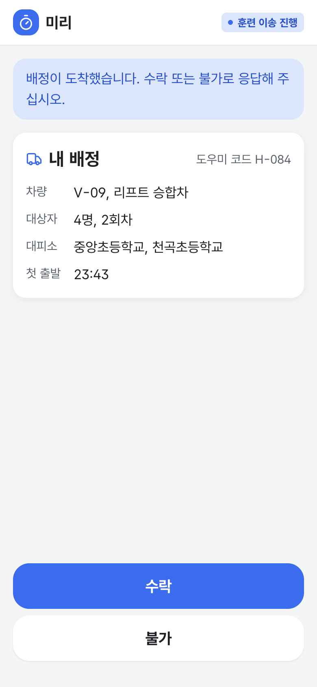
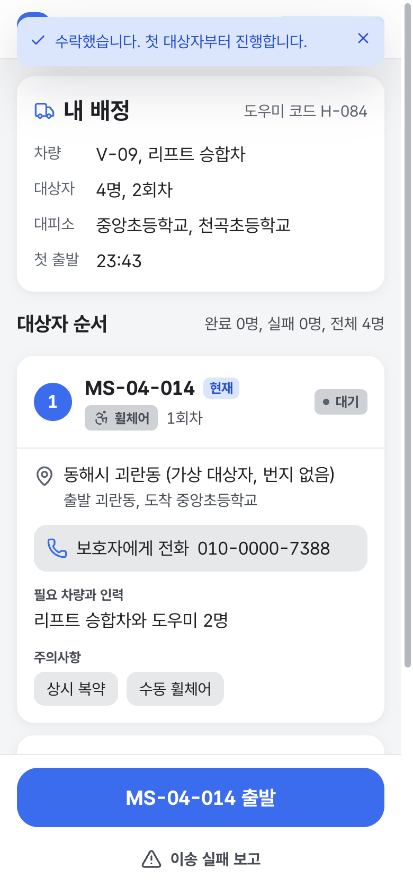

동해 청년 여러분께 부탁드립니다
도우미 화면을 청년의 눈으로 먼저 써 보고 고칠 점을 알려 주세요.
QR로 접속 로그인 없이 도우미 화면이 열립니다
배정 받기 '시연 발령 시작'을 누르고 '수락'
대상자 확인 이동 방법, 필요한 차, 주의사항 읽기
진행 보고 출발, 도착, 탑승, 대피소 인계 누르기
5분, 개인정보 받지 않음miri-indol.vercel.app/h/demo


2026 AI·디지털 기반 사회문제 해결 챌린지 참가 서비스